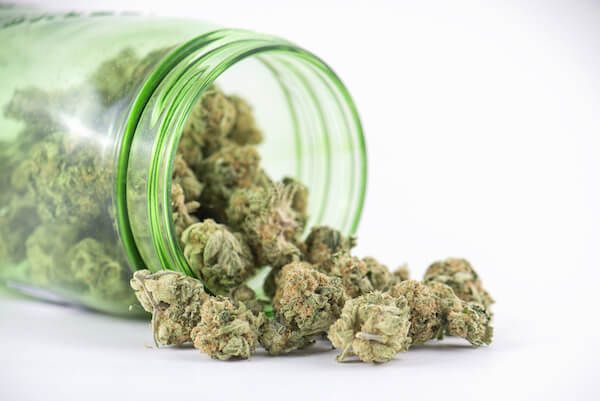

Cannabis
The Organisms that Changed the History (II)
Yi-Sheng Lin
June 11, 2018
What is Cannabis?
These are Cannabis!

- marijuana
- grass
- pot
- dope
- Mary Jane
- weed
- hash
- hemp
- buddha
What is Cannabis?
- a genus of flowering plants
(Cannabis sativa, 大麻) - annual herbaceous
- indigenous to eastern Asia
- grows wild in many of the tropical and temperate areas of the world
It has long been used for...
- hemp fiber
- hemp oil
- hashish
- hash oil
- medicinal purposes
- recreational drug
What's in Cannabis?
The main psychoactive part of cannabis is tetrahydrocannabinol (THC), which is the most notable cannabinoid.
Hemp vs Marijuana
| Type | Hemp | Marijuana |
|---|---|---|
| Is it Cannabis? | Yes | Yes |
| Chemical Makeup | Low THC (≤ 0.3%) | High THC (5% - 35%) |
| Psychoactive? | No | Yes |
| Cultivation | Requires minimal care. Adaptable to grow in most climates. | Grown in carefully controlled atmosphere |
| Applications | Automobiles, body care, clothing, construction, food, plastic, etc. | Medical and recreational use |
The Dark Side of Cannabis
Hashish
Marijuana
Short-Term Effects
- Feeling of well-being
- Talkativeness
- Increased appetite
- Anxiety and paranoia
Long-Term Effects
- Decreased memory and learning abilities
- Decreased motivation in areas such as study, work or concentration
Usage of Cannabis
Cannabis is the most widely used illicit drug in the United States. 7.3% of Americans aged 12 or older had used marijuana within the previous 30 days.
Gateway Drug
The Gateway Hypothesis states that cannabis use increases the probability of trying "harder" drugs.
The Bright Side of Cannabis
What is Hemp?
- one of the fastest growing plants
- one of the first plants to be spun into usable fiber 10,000 years ago
- It can be refined into items including paper, textiles, clothing, biodegradable plastics, biofuel, food, and animal feed
Hemp vs Cotton
| Cotton | Hemp |
|---|---|
| Cotton needs twice as much land as Hemp | Hemp produces twice as much fiber per acre |
| Cotton needs 9.758L to grow 1kg of fiber | Hemp only uses 2.123L to grow 1kg of fiber |
| Cotton accounts for 25% of all pesticide use worldwide | Hemp requires no pesticides |
| Hemp fiber is 4x more durable than Cotton | |
References
- Cannabis - Wikipedia
- Factsheet: What is Cannabis?
- Factsheet: Marijuana Edibles
- Hemp vs Marijuana
- Hashish vs Marijuana
Powered by GitHub Pages and Reveal.js